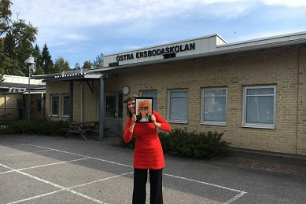
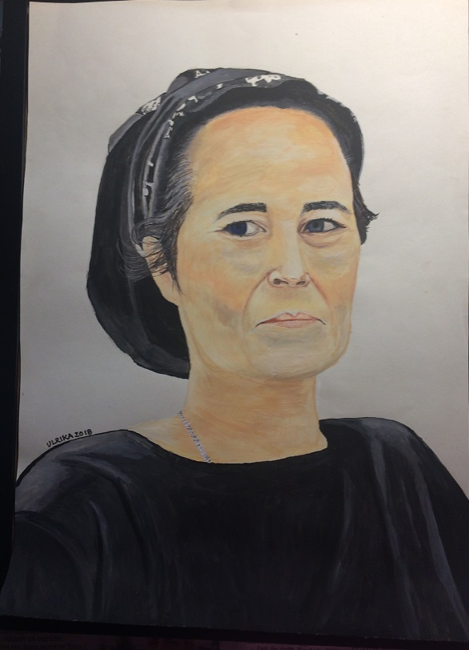
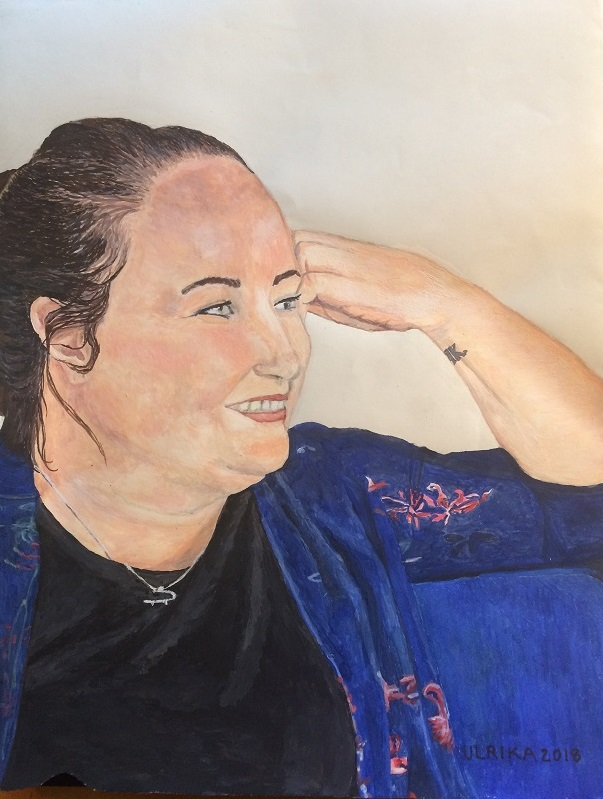
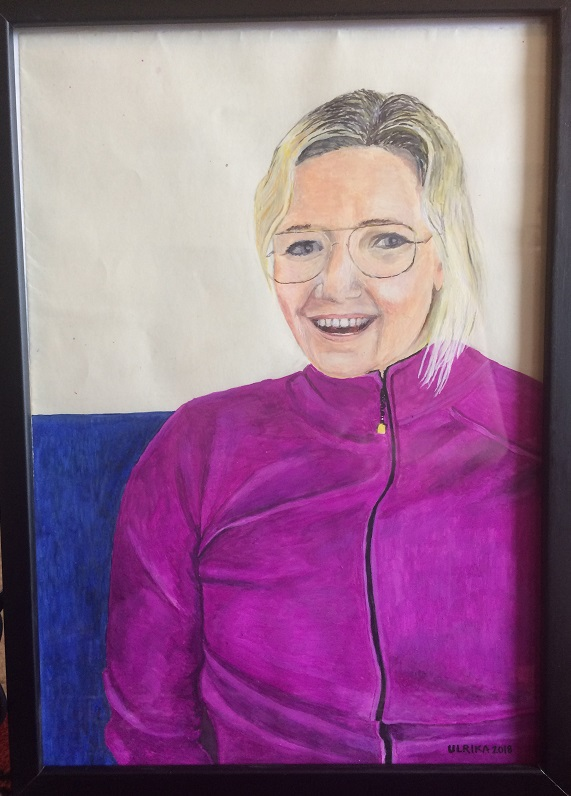
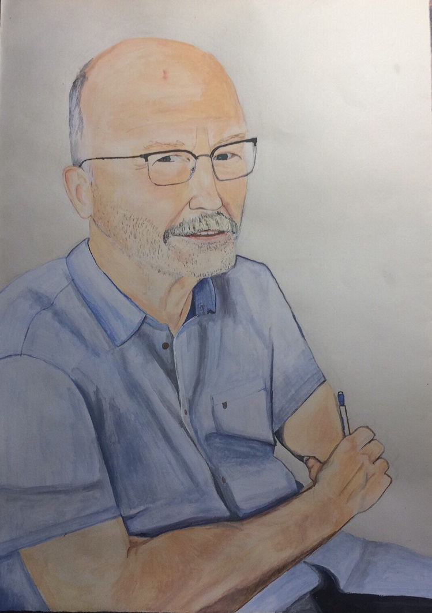
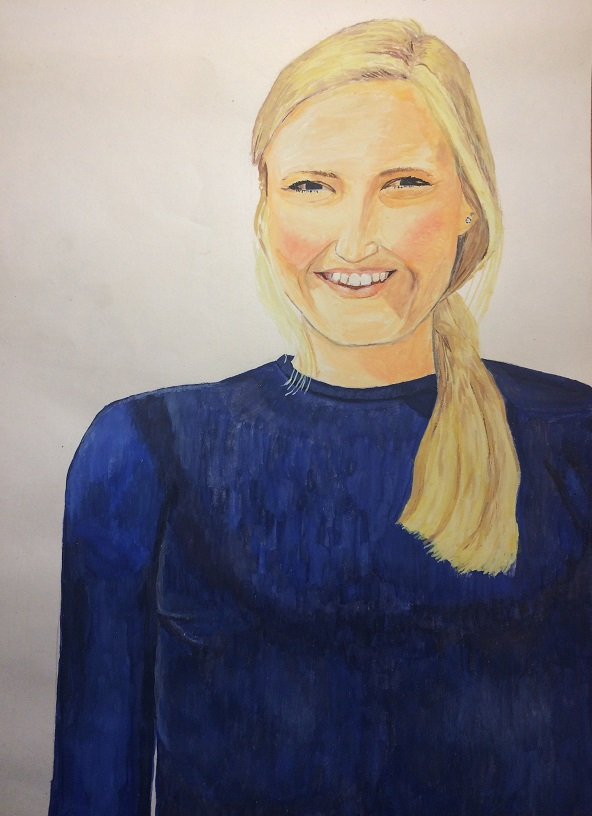

Klimatbikt-ingen skam bara förlåtelse!
En interaktiv aktion, en klimatperformance, ett konstigt konstverk, kalla det vad du vill, men kom och bikta dig!
Hösten 2018 hade jag min första utställning på biblioteket i Ersboda.
Kollegor I -porträtt av personal på Östra Ersbodaskolan presenterade på ett pedagogiskt och lekfullt vis!
Ersboda bibliotek 11 sep-10 okt 2018
Förutom porträtten innehöll utställningen också ett objekt till varje porträtt som skulle paras ihop med rätt person. Alla avmålade hade fått välja en sak som skulle representera dom. Målningarna är gjorda med vanlig vattenfärg, så kallade temperablock som brukar finnas i svenska skolor. Läsåret 17/18 arbetade jag på Östra Ersbodaskolan som rytmiklärare och fiollärare.
Nedan kan du läsa en artikel om utställningen.
|  |
Kollegor - en utställning. Folkbladet.nuUlrika Karlsson porträtterar kollegorna på Östra Ersbodaskolan |
    
Planer finns på en ytterligare utställning med samma tema, den ska heta Kollegor II.
Vill du köpa en tavla?
Alla tavlorna är till salu för 800 kr/st eller 600 kr/st plus en middag till konstnären.